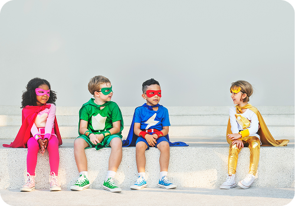

Fællesskab
Fællesskab
At høre til uden at skulle lave sig om
Et godt fællesskab er et sted, hvor du kan være dig selv og blive mødt med respekt. I behøver ikke være enige om alt eller have de samme interesser.
Det kan være i klassen, på et hold, i en klub, i en onlinegruppe eller bare sammen med én person. Det vigtigste er, at du føler dig tryg og ikke bliver gjort til grin eller holdt udenfor.
Prøv at lægge mærke til: Kan jeg sige min mening? Bliver mine grænser respekteret? Føler jeg mig velkommen, også når jeg er stille?
Hvis du oplever mobning, gentagne udelukkelser eller ubehagelige beskeder, er det ikke dit ansvar at klare det alene. Fortæl det til en voksen, du har tillid til, og gem eventuelt beskeder eller skærmbilleder, hvis det foregår digitalt.

Nye venskaber
Sådan kan du tage det første lille skridt
Det kan føles grænseoverskridende at tage kontakt til nogen, man ikke kender så godt. Du behøver ikke finde på noget smart at sige – en lille åbning er nok.
Du kan spørge, hvad den anden synes om en opgave, et spil eller en aktivitet. Du kan også sætte dig i nærheden af nogen eller foreslå at følges i frikvarteret.
Hvis den anden ikke har lyst, betyder det ikke, at der er noget galt med dig. Prøv igen med en anden person eller i et fællesskab, hvor I allerede deler en interesse.
Online fællesskab
Venskaber på nettet og gode grænser
Onlinefællesskaber kan give kontakt til mennesker, der deler dine interesser. Det kan være rart at spille, chatte eller tale med andre, også når I ikke bor tæt på hinanden.
Del ikke adresse, adgangskoder, skole eller private billeder med personer, du ikke kender og stoler på. Du skylder ikke nogen at sende billeder eller svare med det samme.
Hvis nogen presser dig, truer dig eller deler noget privat uden din tilladelse, så gem beskederne, blokér eller anmeld personen, og fortæl det til en voksen, du stoler på.